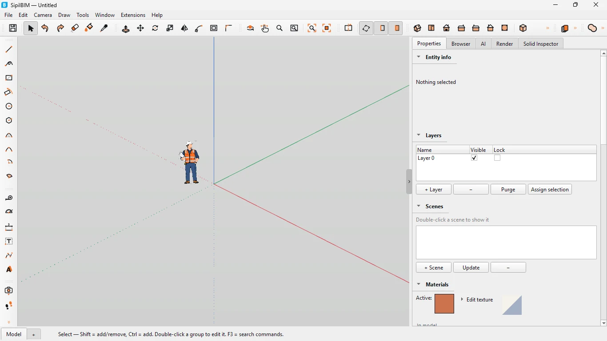
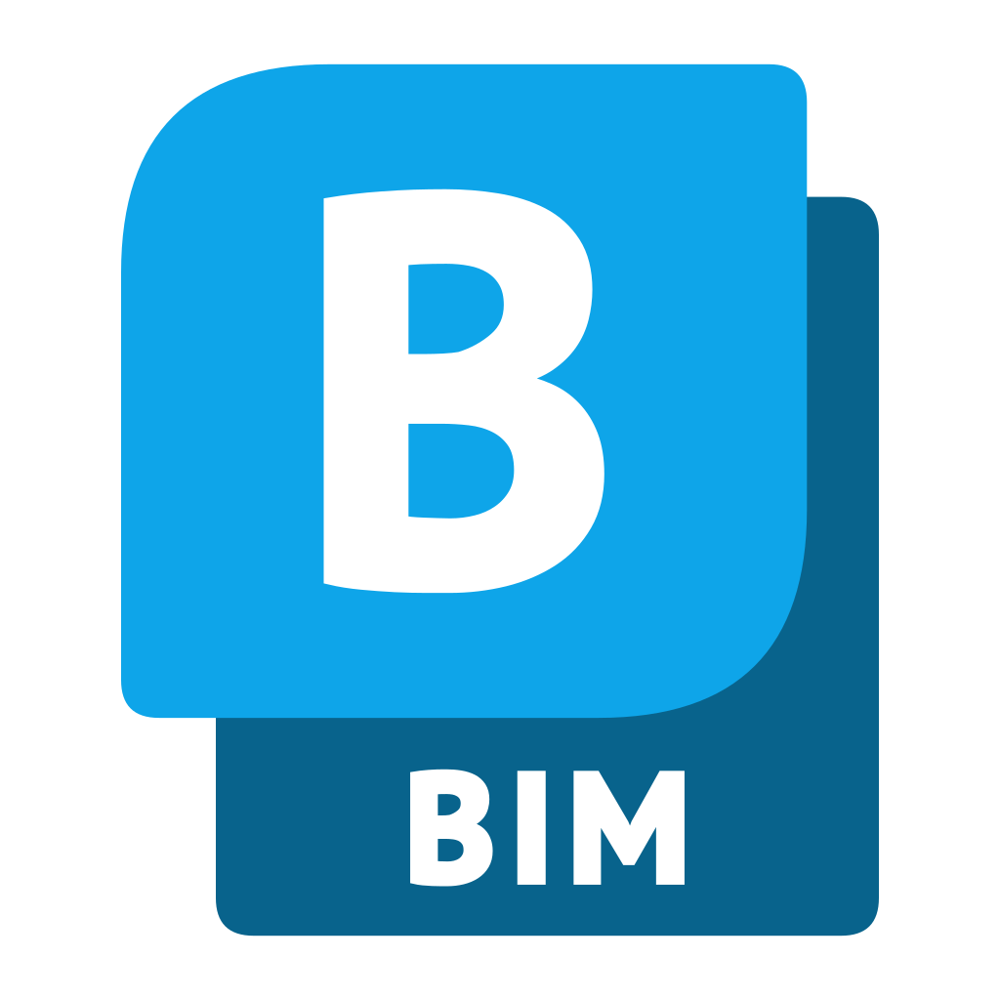

Pemodelan 3D dan BIM untuk Arsitektur serta Teknik Sipil
Rancang model 3D secara intuitif, tambahkan informasi BIM, dan hasilkan kuantitas IFC dengan lebih efisien.


SipilBIM
Versi 2027.4
For Windows 11/10 64-bit
Build ini belum ditandatangani. Windows SmartScreen bisa menampilkan peringatan saat pertama kali dijalankan: pilih More info, lalu Run anyway.
Yang bisa dilakukan
Gambar dan modelkan
Menggambar, extrude, mengedit, dan mewarnai bentuk 3D.
Dimensi dan anotasi
Memberi dimensi dan anotasi langsung pada model.
Impor data
Membuka berkas .skp, mengimpor DXF dan data survei.
BIM dan IFC
Memberi label kelas BIM dan mengekspor kuantitas IFC.